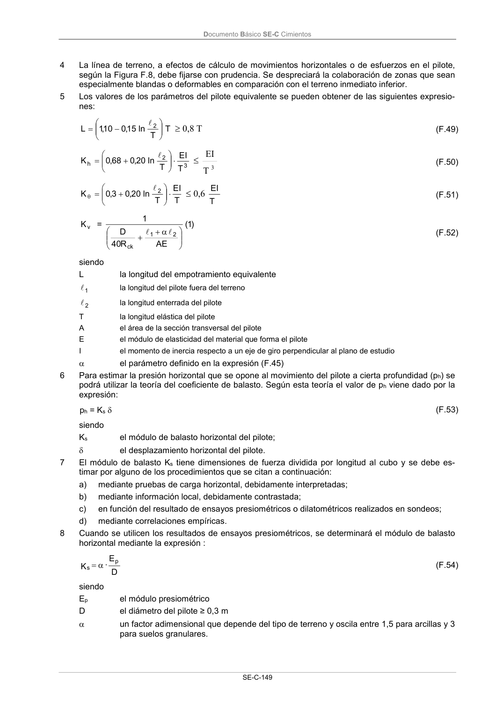

DB-SE-C · Página 154 · versión 2019-12-20
SHA256: a71133f4b0dca253e45ea3071c70f2a512354bcc5cd841bf89b1a502f567ac5e · página física 154 de 165 · métodos de encabezado
solo si están cotejados.
Documento · ← p. 153 · p. 155 →
Formatos: Markdown · JSON de bloques · PDF p. 154 · imagen PNG
Documento Básico SE-C Cimientos SE-C-149 4 La línea de terreno, a efectos de cálculo de movimientos horizontales o de esfuerzos en el pilote, según la Figura F.8, debe fijarse con prudencia. Se despreciará la colaboración de zonas que sean especialmente blandas o deformables en comparación con el terreno inmediato inferior. 5 Los valores de los parámetros del pilote equivalente se pueden obtener de las siguientes expresio- nes: T T ln 15 ,0 10 ,1 L 2 l 0,8 T (F.49) 3 2 h T EI T ln 20 ,0 68 ,0 K l 3 T EI (F.50) T EI T ln 20 ,0 3,0 K 2 l 0,6 T EI (F.51) v K = )1 ( AE R 40 D 1 2 1 ck l l (F.52) siendo L la longitud del empotramiento equivalente 1 l la longitud del pilote fuera del terreno 2 l la longitud enterrada del pilote T la longitud elástica del pilote A el área de la sección transversal del pilote E el módulo de elasticidad del material que forma el pilote I el momento de inercia respecto a un eje de giro perpendicular al plano de estudio el parámetro definido en la expresión (F.45) 6 Para estimar la presión horizontal que se opone al movimiento del pilote a cierta profundidad (ph) se podrá utilizar la teoría del coeficiente de balasto. Según esta teoría el valor de ph viene dado por la expresión: ph = Ks (F.53) siendo Ks el módulo de balasto horizontal del pilote; el desplazamiento horizontal del pilote. 7 El módulo de balasto Ks tiene dimensiones de fuerza dividida por longitud al cubo y se debe es- timar por alguno de los procedimientos que se citan a continuación: a) mediante pruebas de carga horizontal, debidamente interpretadas; b) mediante información local, debidamente contrastada; c) en función del resultado de ensayos presiométricos o dilatométricos realizados en sondeos; d) mediante correlaciones empíricas. 8 Cuando se utilicen los resultados de ensayos presiométricos, se determinará el módulo de balasto horizontal mediante la expresión : D E · K p s (F.54) siendo Ep el módulo presiométrico D el diámetro del pilote ≥ 0,3 m un factor adimensional que depende del tipo de terreno y oscila entre 1,5 para arcillas y 3 para suelos granulares.
